Xiao
One of the mighty and illuminated adepti guarding Liyue, also heralded as the "Vigilant Yaksha." Despite his youthful appearance, tales of his exploits have been documented for millennia. He is especially fond of Wangshu Inn's Almond Tofu. This is because it tastes just like the sweet dreams he used to devour.
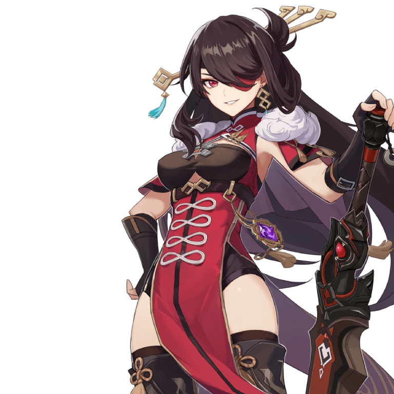Beidou
Captain of the Crux, with quite the reputation in Liyue. There are those who say she can split mountains and part the sea. Others say she draws lightning through her sword. Some say that even the mightiest of sea beasts are no match for her. For those not from Liyue, it may sound like a hearty joke, but those that have sailed with her will say—
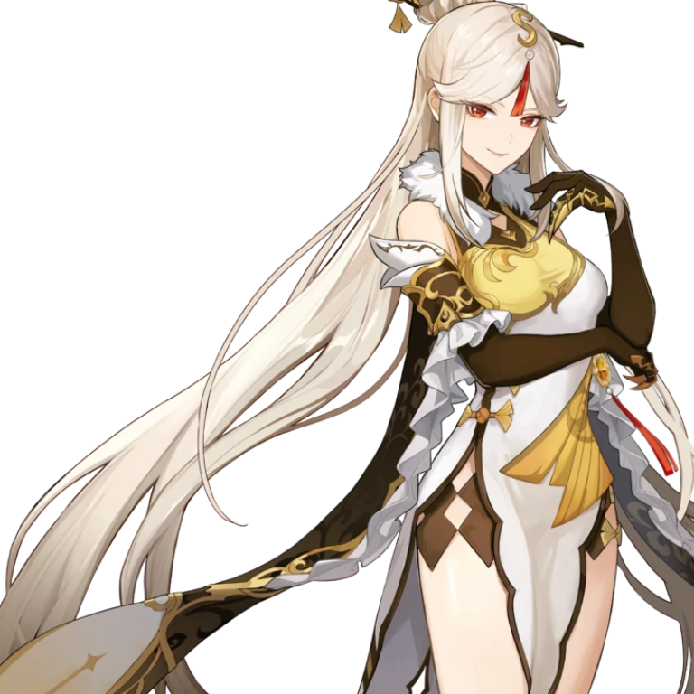Ningguang
Owner of the Jade Chamber in the skies above Liyue, there are stories abound about Ningguang, with her elegance and mysterious smile. As the Tianquan of the Liyue Qixing, not only does she embody law and order, she also represents fortune and wit.
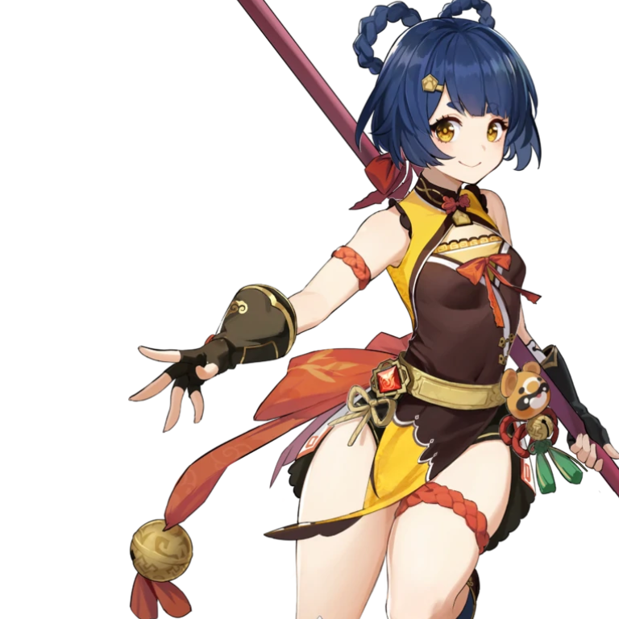Xiangling
The Head Chef at the Wanmin Restaurant and also a waitress there, Xiangling is extremely passionate about cooking and excels at her signature hot and spicy dishes. Though still young, Xiangling is a true master of the culinary arts with all the skills of a kitchen veteran. She enjoys a good reputation among the hearty eaters at Chihu Rock.
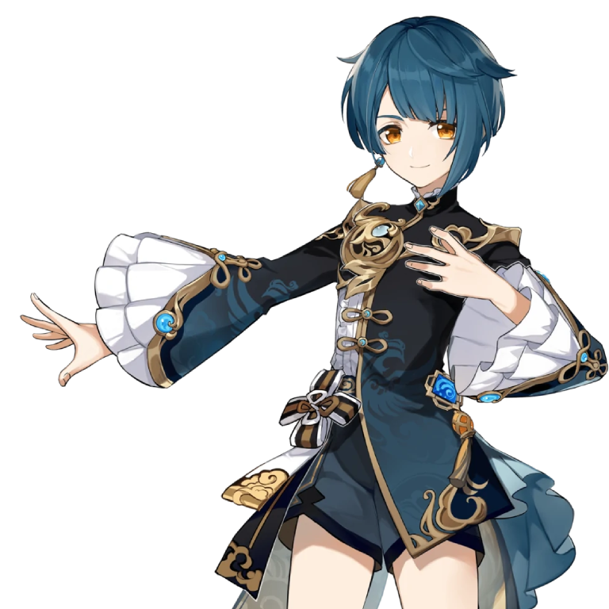Xingqiu
Second son of the Feiyun Commerce Guild, Xingqiu has had a reputation for being studious and polite ever since he was a young child. But there is another side to the mild-mannered Xingqiu everyone knows. A daring, adventurous and much more mischievous side...
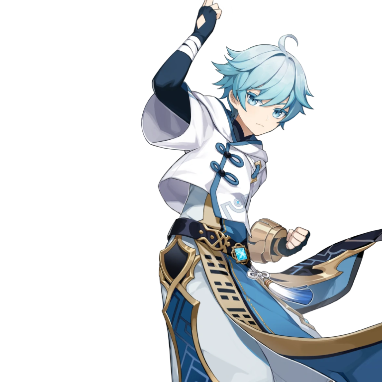Chongyun
An exorcist who roams the land with Liyue as his base of operations, evil spirits fleeing wherever he goes. As the heir to a clan of exorcists, he has always possessed abilities superior to most. However, these abilities are not the result of training, but of an inborn trait — a pure-yang spirit.
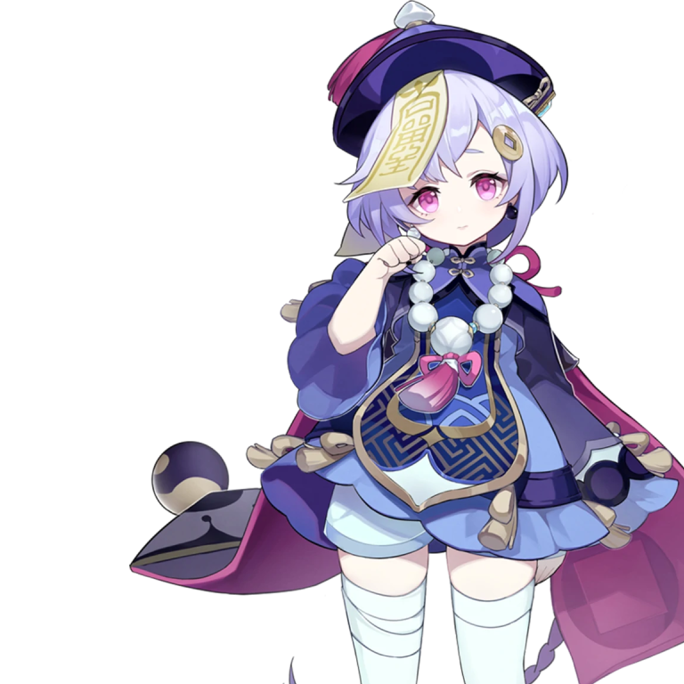Qiqi
An apprentice and herb gatherer at Bubu Pharmacy. "Blessed" by the adepti with a body that cannot die, this petite zombie cannot do anything without first giving herself orders to do it. But on her worst days, she even forgets to look at her notebook...
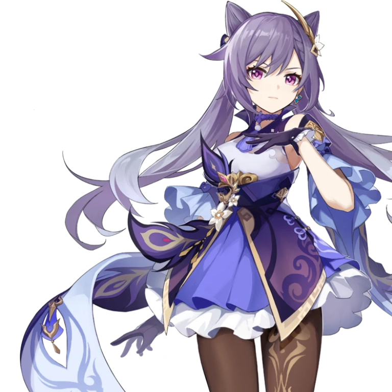Keqing
The Yuheng of the Liyue Qixing. Keqing has much to say about Rex Lapis' unilateral approach to policymaking in Liyue — but in truth, gods admire skeptics such as her quite a lot. She firmly believes that humanity's future should be determined by humans themselves, and that they can even do better than the archons and adepti have done for them. In order to prove this, she works harder than anyone else.
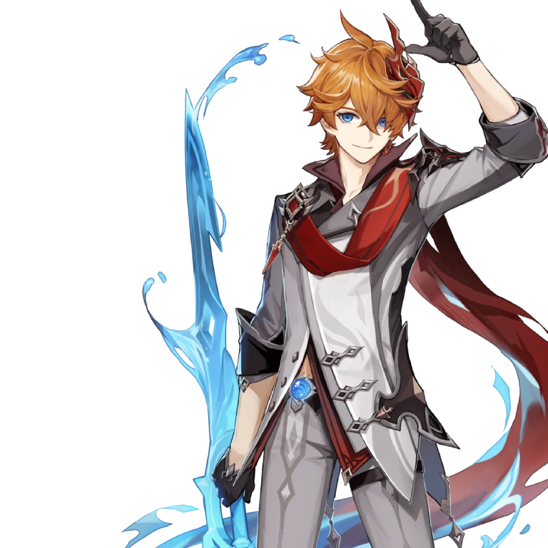Tartaglia
Meet Tartaglia — the cunning Snezhnayan whose unpredictable personality keeps people guessing his every move. Don't be under any illusion as to what he might be thinking or what his intentions are. Just remember this: Behind that innocent, childlike exterior lies a finely honed instrument of war.
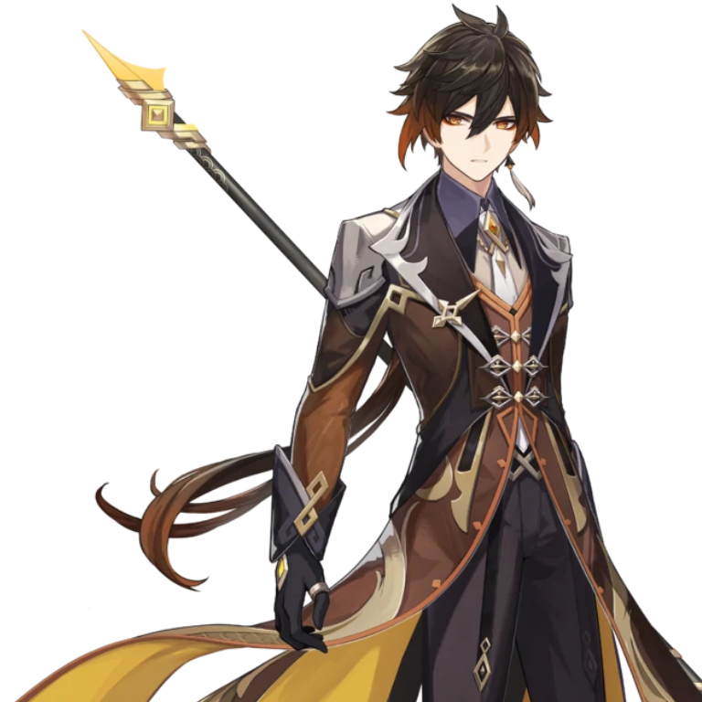Zhongli
Wangsheng Funeral Parlor mysterious consultant. Handsome, elegant, and surpassingly learned. Though no one knows where Zhongli is from, he is a master of courtesy and rules. From his seat at Wangsheng Funeral Parlor, he performs all manner of rituals.
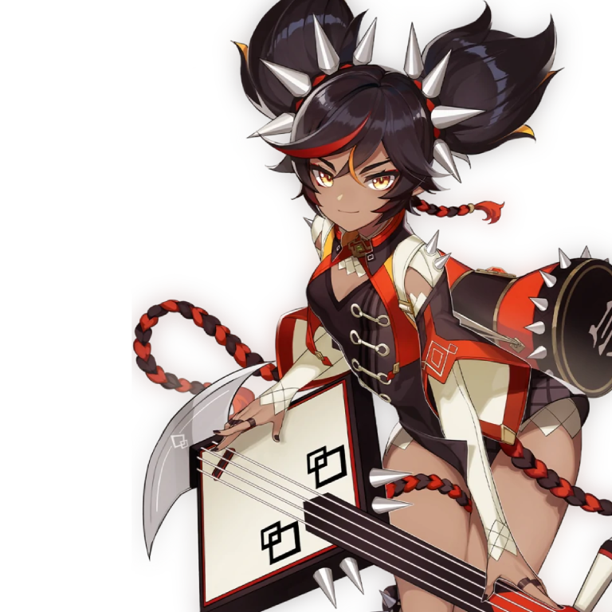Xinyan
Rock 'n' roll is an avant-garde art in Liyue Harbor and Xinyan is the pioneer in this field. She rebels against ossified prejudices, using her music and passionate singing to awaken dazed souls fatigued by worldly matters. If you get the chance, do not miss out on her next performance!
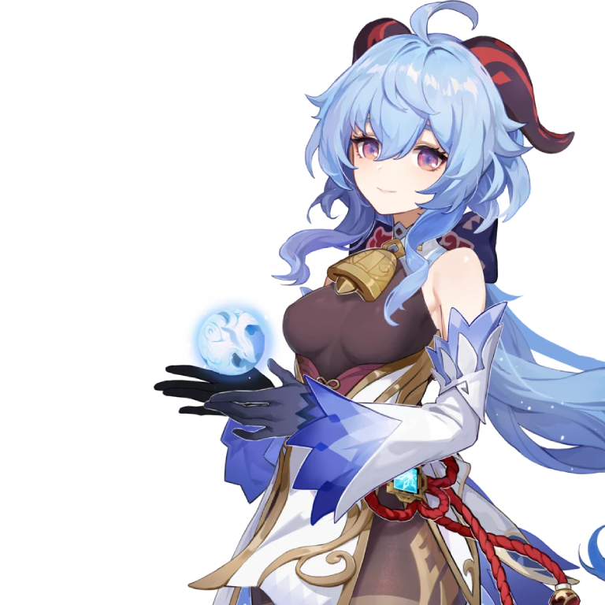Ganyu
The secretary to the Liyue Qixing. The blood of both human and illuminated beast flows within her veins. Graceful and quiet by nature, yet the gentle disposition of qilin sees not even the slightest conflict with even the most arduous of workloads. After all, Ganyu firmly believes that all the work she does is in honor of her contract with Rex Lapis, seeking the well-being of all living things within Liyue.
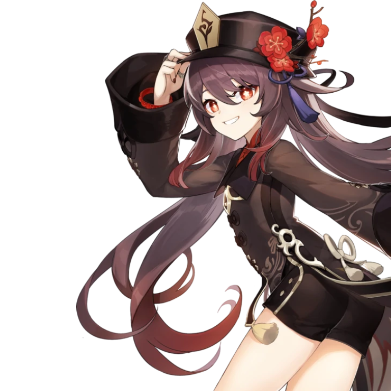Hu Tao
Hu Tao is the 77th Director of the Wangsheng Funeral Parlor, a person vital to managing Liyue's funerary affairs. She does her utmost to flawlessly carry out a person's last rites and preserve the world's balance of yin and yang. Aside from this, she is also a talented poet whose many "masterpieces" have passed around Liyue's populace by word of mouth.
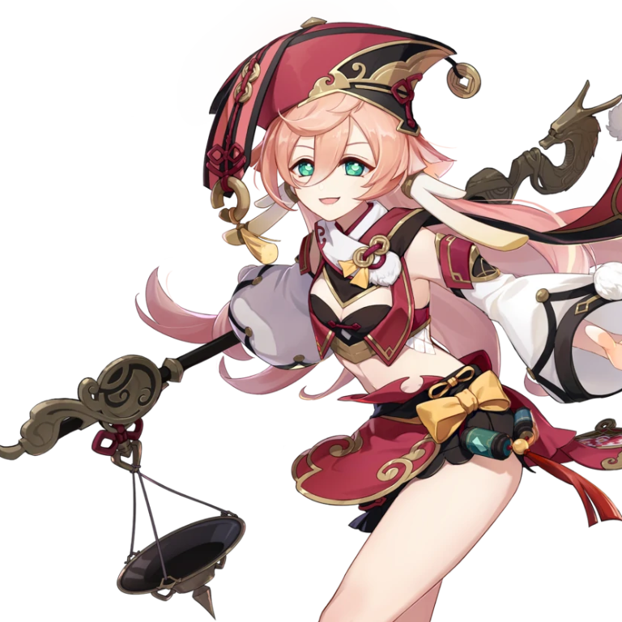Yanfei
A half-illuminated beast and highly-skilled legal adviser. She combines adherence to the legal codices and reasonable flexibility to find the perfect balance in her work. She devotes herself to protecting the fairness of contracts in Liyue with her identity as a legal adviser and her unique experience and methods.
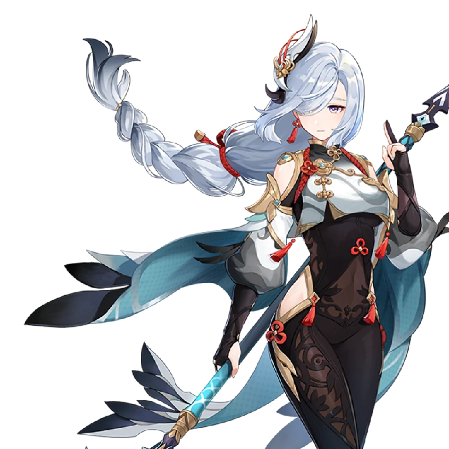Shenhe
Even though she was born in the human world, she ended up being an adepti disciple. She grew up in the mountains far away from Liyue Harbor, her soul bound with red ropes, training both her body and mind. Despite having the elegant temperament of an adeptus, she seems to be shrouded in mystery.
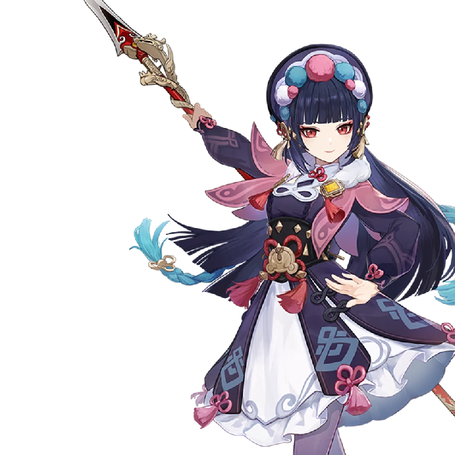Yun Jin
The current director of the Yun-Han Opera Troupe, a renowned Liyue opera singer who is skilled in both playwriting and singing. Her style is one-of-a-kind, exquisite and delicate, much like the person herself.